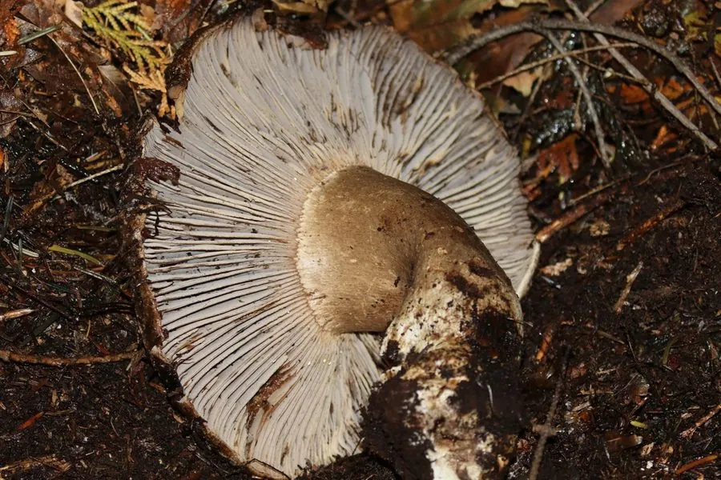

真菌 · 真菌界
亚稀褶红菇 Russula subnigricans

外观普通的灰褐色红菇，却是中国南方最致命的毒菌之一，误食可导致横纹肌溶解，死亡率很高，严禁采食。
- 分类
- 门担子菌门纲伞菌纲目红菇目科红菇科属红菇属
- 栖息环境
- 阔叶林和针阔混交林的地面，夏秋季出菇
- 地理分布
- 中国福建、湖南、江西、四川、云南等地，东亚其他地区也有分布
- 保护级别
- 暂无评估（IUCN 未评估，有毒物种）
物种志
亚稀褶红菇是担子菌门红菇目的外生菌根真菌，子实体单生或群生。菌盖呈灰褐色至黑褐色，中央下凹，直径 5–12 cm，表面干燥；菌肉白色，受伤后缓慢变红；菌褶白色至乳黄色，较稀，受伤后变红；菌柄灰白色，粗短。它的外形与一些可食的红菇相似，容易被误采。
亚稀褶红菇多生于阔叶林和针阔混交林的地面，夏秋季出菇，在中国福建、湖南、江西、四川、云南等地有分布。它含有导致横纹肌溶解的毒素，误食后可引起肌肉疼痛、酱油色尿、急性肾衰竭，死亡率很高，是中国南方最致命的毒菌之一。目前没有特效解毒药，只能对症治疗。识别毒菌不能仅凭颜色或“虫咬无毒”等经验，不认识的野生菌坚决不采不食。
形态与习性
- 菌盖直径 5–12 cm，灰褐色至黑褐色，中央下凹
- 菌肉白色，受伤后缓慢变红
- 菌褶白色至乳黄色，较稀，受伤后变红
- 菌柄灰白色，粗短
- 毒性含导致横纹肌溶解的毒素，无特效解毒药
- 中毒症状肌肉疼痛、酱油色尿、急性肾衰竭
- 分布中国南方多个省区的阔叶林
趣味知识
- 亚稀褶红菇含有导致横纹肌溶解的毒素，误食可致命。
- 它的外形与一些可食红菇相似，是常见的误采对象。
- 中毒后会出现肌肉疼痛、酱油色尿和急性肾衰竭。
- 不认识的野生菌坚决不采不食，切勿凭经验判断。